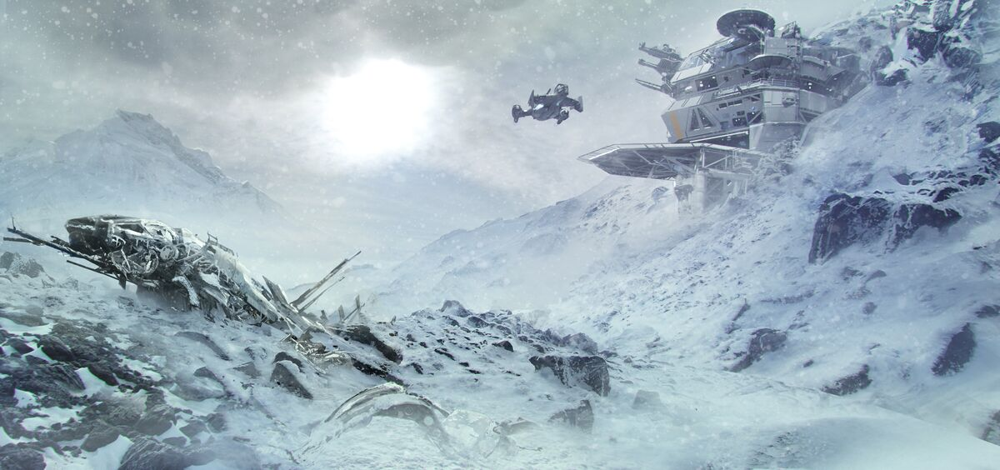

SYSTEM: OBERON

Excurs - System: Oberon
Oberon ist seit jeher ein System, das jene auf der Suche nach Reichtum und Glück anlockte, nur um sie dann mittellos zurückzulassen. Als der Tarsus Quantum Drive Mod zum Ende des 23. Jahrhunderts immer gebräuchlicher wurde, bildeten sich neue Forschungsunternehmen, die auf die Sicherung der Vorteile eines selbst entdeckten Systems aus waren. Das „Goldene Zeitalter der Expansion“ war offiziell eingeläutet – mit hunderten Schiffen, welche die bekannten Gebiete durchforsteten, immer in der Hoffnung, die Grenzen der Menschheit weiter auszudehnen. Auch wenn die Medien gerne ein romantisiertes Bild vom Leben als Entdecker malten, kamen auf jede erfolgreiche Geschichte, wie die von NavJumper Antoine Lebec, ein Dutzend, die bei der Jagd nach neuen Sprungpunkten alles verloren, einschließlich ihres Lebens. Das Schiff, welches den Sprungpunkt in das Oberon System gefunden hatte, war trotz dieses Erfolgs eine solche Tragödie.
Seit 2348 erkundete die Mannschaft der ‚Lindy‘ die Ausläufer des Nul Systems und gerade als ihre Geldreserven zu Neige gingen, erfassten ihre Scanner eine schwache Anomalie, die sich kurze Zeit später als Sprungpunkt herausstellen sollte. Sie durchquerten den Sprungpunkt erfolgreich und landeten auf der anderen Seite in einem neuen System mit einem Neutronenstern.
Wie sich herausstellte, besaß der kleine, dichte Stern die doppelte Masse der meisten Typ-G Hauptreihensterne, wohingegen sein Sonnenradius nur ein Bruchteil deren Größe betrug. Bevor der Hauptreihenstern vor ungefähr 1,4 Millionen Jahren in einer Supernova aufging, handelte es sich um ein Doppelsternsystem. Während dieses Vorgangs kollabierte er gravitativ und trug dabei die äußeren Schichten seines Pendanten ab. Was im Sog dieses chaotischen Ereignisses übrig blieb, war der Kern des früheren weißen Zwerges, heute als Oberon I bekannt, und sechs andere Planeten, die sich aus den Überbleibseln der ursprünglich vorhandenen Planeten bildeten. Die Lindy Crew schloss in freudiger Erwartung des anstehenden Zahltags ihre ersten Scans ab und kartographierte ihren Rückweg in das Nul System. Da das Durchqueren eines neuen Sprungpunktes ein gefährliches Unterfangen war und noch immer ist, konnte auch der Rückweg aufgrund der begrenzten Kapazitäten der Navigationscomputersysteme dieser Zeit tödlich verlaufen. Als die Lindy schließlich in Nul auftauchte, war die Schiffshülle stark beschädigt und die Crew verschollen.
Als ein Bergungsschiff das Wrack Tage später fand, berief es sich aufgrund der fehlenden Kontrolle durch die Regierung in Nul auf seine Bergungsrechte und beanspruchte die wertvollen Navdaten, die es in dem zerborstenen Schiff gefunden hatte, für sich. In den Jahrzehnten vor der Bildung des UNE befanden sich die Vorschriften in Bezug auf die Entdeckung neuer Systeme noch in den Kinderschuhen. Nachdem die Daten rasch versteigert waren, erhielt die Besitzerin des Bergungsschiffs, Stacia Rholtz, dank eines Bieterkriegs, der von dem kürzlichen Hype durch die Terraforming-Bemühungen von Croshaw ausgelöst wurde, eine gewaltige Summe für die Koordinaten des Sprungpunktes. Die Zukunft der Menschheit schien außerhalb des Sol Systems zu liegen und Unternehmen waren bereit, viel Geld auszugeben, um gleich am Anfang dabei einsteigen zu können. Das Gebot, welches den Zuschlag erhielt, wurde von Titania Terraforming abgegeben, die daraufhin unverzüglich mit den Planungen für die Besiedlung des Systems begannen. Nachdem für die Beschaffung der Koordinaten selbst der Großteil des verfügbaren Budgets ausgegeben worden war, entschied sich Titania für einen einzigartigen Weg, die Kosten ihrer Terraforming-Bemühungen von Oberon II zu senken: Sie nahmen zum Ausgleich für ihre gegenwärtigen Ausgaben Fremdkapital auf. Die Arbeiter, die sich für das Projekt eingeschrieben hatten, sollten Grundstücke zu deutlich niedrigeren Preisen kaufen können anstatt eine Bezahlung zu erhalten. Titania versprach ihnen, dass sie sich mit ihren Familien auf dem Planeten niederlassen könnten, sobald der Terraforming-Prozess des Planeten abgeschlossen wäre. Der Name des Systems, Oberon, war Teil der Markenbildung, der während der Marketing-Kampagne verwendet wurde, um den Arbeitern Anteile zu verkaufen: „Die Welt Ihrer Träume liegt in Ihren Händen.“ Die Leute unterschrieben zu Tausenden die Arbeitsverträge, verkauften ihr gesamtes Hab und Gut und zahlten ihre Ersparnisse ein, begierig auf eine Chance, Sol für einen Neuanfang hinter sich zu lassen. Es war eine interessante Geschäftsstrategie, die vielleicht funktioniert hätte, wenn da nicht die Tatsache gewesen wäre, dass Oberon II weit von einem idealen Terraforming-Kandidaten entfernt war. Durch das wenige Licht und die geringe Wärme durch den Neutronenstern war es als erstes notwendig, die Kerntemperatur des Planeten massiv anzuheben. Das sollte eine Meisterleistung werden, die noch nie zuvor versucht worden war und die Titanias Fähigkeiten eindrucksvoll beweisen sollten. Nach jahrelanger Quälerei nahm der Kern die Manipulationen jedoch nicht an. Das Projekt wurde als Fehlschlag erklärt und das Unternehmen Titania über Nacht aufgelöst. Die Arbeiter wurden mittellos auf einem gefrorenen Planeten, der nur zur Hälfte terraformt war, zurückgelassen. Die Siedler schafften es durch die Nutzung der von Titania zurückgelassenen Ausrüstung zwar, sich auf dem Planeten mit seinem nie endenden Winter eine notdürftige Existenz aufzubauen, ihre Träume von besseren Zeiten blieben jedoch unerfüllt. Obwohl es im System einige Reichtümer in Form von Rohmaterialien und Gasen gab, waren es nie genug, um über die Jahrhunderte weitere wirtschaftliche Investitionen zu gewährleisten. Im späten 2600 Jahrhundert erwog das UEE kurzzeitig, das System zu kaufen, ließ die Chance, Oberon in das Empire einzugliedern, dann jedoch verstreichen. Seither blieb es unbeansprucht. Nur die Nachkommen dieser ersten Siedler, fehlgeleitete Schicksalssucher und verschiedene Ausgestoßene und Verbrecher nennen dieses System heute ihr Zuhause. Ironischerweise war es nach all dem Leid in seiner Geschichte die jüngste Tragödie Anfang dieses Jahres, welche die Leute von Oberon erneut Hoffnung schöpfen lässt. Obwohl die Bevölkerung starke Verluste erlitten hat, als ein Vanduul-Clan kürzlich die Siedlungen von Uriel überfiel, erreichte Admiral Bishop und die UEES Retribution rechtzeitig das System, um einen zweiten Angriff abwehren und eine neue Ordnung in dem allgemein gesetzlosen System etablieren zu können. Zum ersten Mal in seiner Geschichte beherbergt Oberon nun ein Aufgebot an Großkampfschiffen der Marine. Auch wenn die Retribution weiterzog, verblieb ein großer Kampfverband in dem System, um es vor weiteren Vanduul-Einfällen zu beschützen. Die Flottenpräsenz begann Wirkung zu zeigen, die Aktivitäten der Gesetzlosen fiel ab und nach und nach trudelten Hilfsgüter ein. Obgleich einige verkünden, dass dies eine mögliche zweite Chance für das System darstellt, gibt es auch viele, die prophezeien, dass die Marine bald wieder abziehen wird. Falls es dazu kommt, wird sich Oberon vielleicht nie wieder erholen.
„Angesichts einer solchen Gefahr können wir es uns nicht leisten, zwischen denen zu unterscheiden, die zum Reich gehören und denen, die nicht dazu zählen. Es gibt nur uns gegen sie. Menschen gegen Vanduul.“ – Admiral Bishop, Nachricht an Imperator Costigan, 2946
Seit 2348 erkundete die Mannschaft der ‚Lindy‘ die Ausläufer des Nul Systems und gerade als ihre Geldreserven zu Neige gingen, erfassten ihre Scanner eine schwache Anomalie, die sich kurze Zeit später als Sprungpunkt herausstellen sollte. Sie durchquerten den Sprungpunkt erfolgreich und landeten auf der anderen Seite in einem neuen System mit einem Neutronenstern.
Wie sich herausstellte, besaß der kleine, dichte Stern die doppelte Masse der meisten Typ-G Hauptreihensterne, wohingegen sein Sonnenradius nur ein Bruchteil deren Größe betrug. Bevor der Hauptreihenstern vor ungefähr 1,4 Millionen Jahren in einer Supernova aufging, handelte es sich um ein Doppelsternsystem. Während dieses Vorgangs kollabierte er gravitativ und trug dabei die äußeren Schichten seines Pendanten ab. Was im Sog dieses chaotischen Ereignisses übrig blieb, war der Kern des früheren weißen Zwerges, heute als Oberon I bekannt, und sechs andere Planeten, die sich aus den Überbleibseln der ursprünglich vorhandenen Planeten bildeten. Die Lindy Crew schloss in freudiger Erwartung des anstehenden Zahltags ihre ersten Scans ab und kartographierte ihren Rückweg in das Nul System. Da das Durchqueren eines neuen Sprungpunktes ein gefährliches Unterfangen war und noch immer ist, konnte auch der Rückweg aufgrund der begrenzten Kapazitäten der Navigationscomputersysteme dieser Zeit tödlich verlaufen. Als die Lindy schließlich in Nul auftauchte, war die Schiffshülle stark beschädigt und die Crew verschollen.
Als ein Bergungsschiff das Wrack Tage später fand, berief es sich aufgrund der fehlenden Kontrolle durch die Regierung in Nul auf seine Bergungsrechte und beanspruchte die wertvollen Navdaten, die es in dem zerborstenen Schiff gefunden hatte, für sich. In den Jahrzehnten vor der Bildung des UNE befanden sich die Vorschriften in Bezug auf die Entdeckung neuer Systeme noch in den Kinderschuhen. Nachdem die Daten rasch versteigert waren, erhielt die Besitzerin des Bergungsschiffs, Stacia Rholtz, dank eines Bieterkriegs, der von dem kürzlichen Hype durch die Terraforming-Bemühungen von Croshaw ausgelöst wurde, eine gewaltige Summe für die Koordinaten des Sprungpunktes. Die Zukunft der Menschheit schien außerhalb des Sol Systems zu liegen und Unternehmen waren bereit, viel Geld auszugeben, um gleich am Anfang dabei einsteigen zu können. Das Gebot, welches den Zuschlag erhielt, wurde von Titania Terraforming abgegeben, die daraufhin unverzüglich mit den Planungen für die Besiedlung des Systems begannen. Nachdem für die Beschaffung der Koordinaten selbst der Großteil des verfügbaren Budgets ausgegeben worden war, entschied sich Titania für einen einzigartigen Weg, die Kosten ihrer Terraforming-Bemühungen von Oberon II zu senken: Sie nahmen zum Ausgleich für ihre gegenwärtigen Ausgaben Fremdkapital auf. Die Arbeiter, die sich für das Projekt eingeschrieben hatten, sollten Grundstücke zu deutlich niedrigeren Preisen kaufen können anstatt eine Bezahlung zu erhalten. Titania versprach ihnen, dass sie sich mit ihren Familien auf dem Planeten niederlassen könnten, sobald der Terraforming-Prozess des Planeten abgeschlossen wäre. Der Name des Systems, Oberon, war Teil der Markenbildung, der während der Marketing-Kampagne verwendet wurde, um den Arbeitern Anteile zu verkaufen: „Die Welt Ihrer Träume liegt in Ihren Händen.“ Die Leute unterschrieben zu Tausenden die Arbeitsverträge, verkauften ihr gesamtes Hab und Gut und zahlten ihre Ersparnisse ein, begierig auf eine Chance, Sol für einen Neuanfang hinter sich zu lassen. Es war eine interessante Geschäftsstrategie, die vielleicht funktioniert hätte, wenn da nicht die Tatsache gewesen wäre, dass Oberon II weit von einem idealen Terraforming-Kandidaten entfernt war. Durch das wenige Licht und die geringe Wärme durch den Neutronenstern war es als erstes notwendig, die Kerntemperatur des Planeten massiv anzuheben. Das sollte eine Meisterleistung werden, die noch nie zuvor versucht worden war und die Titanias Fähigkeiten eindrucksvoll beweisen sollten. Nach jahrelanger Quälerei nahm der Kern die Manipulationen jedoch nicht an. Das Projekt wurde als Fehlschlag erklärt und das Unternehmen Titania über Nacht aufgelöst. Die Arbeiter wurden mittellos auf einem gefrorenen Planeten, der nur zur Hälfte terraformt war, zurückgelassen. Die Siedler schafften es durch die Nutzung der von Titania zurückgelassenen Ausrüstung zwar, sich auf dem Planeten mit seinem nie endenden Winter eine notdürftige Existenz aufzubauen, ihre Träume von besseren Zeiten blieben jedoch unerfüllt. Obwohl es im System einige Reichtümer in Form von Rohmaterialien und Gasen gab, waren es nie genug, um über die Jahrhunderte weitere wirtschaftliche Investitionen zu gewährleisten. Im späten 2600 Jahrhundert erwog das UEE kurzzeitig, das System zu kaufen, ließ die Chance, Oberon in das Empire einzugliedern, dann jedoch verstreichen. Seither blieb es unbeansprucht. Nur die Nachkommen dieser ersten Siedler, fehlgeleitete Schicksalssucher und verschiedene Ausgestoßene und Verbrecher nennen dieses System heute ihr Zuhause. Ironischerweise war es nach all dem Leid in seiner Geschichte die jüngste Tragödie Anfang dieses Jahres, welche die Leute von Oberon erneut Hoffnung schöpfen lässt. Obwohl die Bevölkerung starke Verluste erlitten hat, als ein Vanduul-Clan kürzlich die Siedlungen von Uriel überfiel, erreichte Admiral Bishop und die UEES Retribution rechtzeitig das System, um einen zweiten Angriff abwehren und eine neue Ordnung in dem allgemein gesetzlosen System etablieren zu können. Zum ersten Mal in seiner Geschichte beherbergt Oberon nun ein Aufgebot an Großkampfschiffen der Marine. Auch wenn die Retribution weiterzog, verblieb ein großer Kampfverband in dem System, um es vor weiteren Vanduul-Einfällen zu beschützen. Die Flottenpräsenz begann Wirkung zu zeigen, die Aktivitäten der Gesetzlosen fiel ab und nach und nach trudelten Hilfsgüter ein. Obgleich einige verkünden, dass dies eine mögliche zweite Chance für das System darstellt, gibt es auch viele, die prophezeien, dass die Marine bald wieder abziehen wird. Falls es dazu kommt, wird sich Oberon vielleicht nie wieder erholen.
Oberon I (Gonn)
Der Legende nach erhielt der Planet seinen Namen von einem der ersten Siedler, der ein Grubenfeld abgesteckt hatte – ein früherer Cathcart Schlepper, der für gewöhnlich konkurrierende Schiffe davonjagte, indem er „Chinewa bedda get Gonn!“ schrie. Als Karbon-Supererde ist Oberon I der Überrest des früheren Doppelsterns des Systems. Trotz der reichhaltigen, unangetasteten Ressourcen wollen sich nur wenige Minenarbeiter den extremen Umwelt- und ökonomischen Bedingungen auf diesem Planeten stellen. Selbst die niedrigsten Wartungskosten einer der wenigen, vereinzelt auftauchenden, automatisierten Raffinerien sind den Meisten zu teuer. Sogar die abgehärtete und schroffe Bergbaugemeinschaft, die dort lebt, muss für ihre Profite kämpfen. Viele fanden den Mut und starteten einen Versuch, nach der enormen Fülle an Diamanten zu suchen, die gerüchteweise im dichten Karbonkern des Planten zu finden sind – trotz der Tatsache, dass bisher nur wenige und dann lediglich spärliche Diamantenadern gefunden worden sind.Oberon II (Uriel)
Die Siedler, welche nach dem fehlgeschlagenen Terraforming gestrandet waren, wurden in den Untergrund gedrängt, um den unwirschen Bedingungen auf der Oberfläche zu entgehen. Die Temperatur ist in der Nähe des Planetenkerns etwas wärmer. Die Familien verbrachten Jahrzehnte damit, in den dunklen und dicht gedrängten Höhlen ein jämmerliches Dasein zu fristen. Der Mangel an Ressourcen führte in den ersten Jahren zu massiven internen Machtkämpfen und endete mit einer Gesellschaft, die auf starken Familienbanden aufbaute, die sich klar voneinander trennten, je nachdem in welchem „Kaninchenbau“ man lebte. Eine dieser Familien, bekannt als „das Echo“, schrieben das Überleben der Gruppe ihrer Glaubensstärke zu. Man sagt, der Name des Planeten komme von ihrem ständig wiederholten Sprichwort „In der Finsternis der Tunnel ist Gott mein Licht“. So schwierig das Leben auf Uriel auch war, im 27. Jahrhundert wurde es deutlich schlimmer, als eine Familie in einer der Höhlen begann, den Kastanienkäfer als Nahrungsquelle zu züchten. Das funktionierte zunächst gut. Die Insekten verbrachten siebzig Jahre im Winterschlaf, waren dann sechs Monate aktiv und konnten dabei so gut wie alles fressen. Die Haltung war dadurch extrem einfach. Allerdings währte das nicht lange. Die Bewohner stellten fest, dass die Insekten einen Weg gefunden hatten, auf der Oberfläche zu überleben und begannen sich zu den anderen Höhlen auszubreiten. Was für die Einheimischen als eine willkommene Nahrungsergänzung begonnen hatte, verwandelte sich schnell in eine ernstzunehmende Pest, als die Käferpopulation in die Millionen anstieg. Präzise wie ein Uhrwerk tauchen die Käfer inzwischen alle 70 Jahre auf und fegen über den Planeten hinweg, während sie alles verschlingen, was sich ihnen in den Weg stellt. Die meisten Höhlen haben Methoden entwickelt, die Tunnel während dieser „Käfersaison“ abzudichten. Alle Versuche, die Oberfläche zu besiedeln, hat die aggressive Spezies jedoch ernsthaft gestört. In den vergangenen Jahren sind mehrere oberirdische Gemeinschaften entstanden, die jedoch aufgrund der drohenden Gefahr durch die Kastanienkäfer relativ klein geblieben sind. Einige sehen dies als glückliche Fügung an, da die Verluste des letzten Vanduul-Angriffs deutlich schlimmer gewesen wären, wenn die Plage die Bevölkerung nicht im Untergrund gehalten hätte.Oberon III & IV
Diese kleinen, felsigen Protoplaneten bewegen sich ziemlich weit außen in der kleinen habitablen Zone, die noch etwas von dem wenigen Licht des Neutronensterns erhält. Oberon V Wie wenig Ressourcen es auch immer auf diesem atmosphären-losen Mesoplaneten gegeben haben mag, sie wurden alle längst abgebaut. Zurück blieb ein karger Fels, von dem nur wenige glauben, dass er einen Besuch wert wäre. Oberon VI Selbst mit seinem steinigen Kern hat dieser Gaszwerg nicht viel, das sich abzubauen lohnt. Oberon VII Als eines der wenigen sehenswerten Dinge im gesamten Oberon System ist dieser aus Kohlenmonoxid bestehender Klasse IV Gasgigant reich an Alkali-Metallen, wodurch er seine angenehme, dezente Farbe erhält. Reisewarnung Vor einem Besuch auf Uriel solltet Ihr sicherstellen, dass es nicht das Jahr des Kastanienkäfers ist. Auf der Oberfläche abgestellte Schiffe laufen Gefahr, ernsthafte Schäden durch die unersättlichen Insekten davon zu tragen.Ein Flüstern im Wind
„Das Wertvollste, das ein Schiff im Oberon System transportieren kann, sind Urielaner… aus dem System hinaus.“ - Urelianisches Sprichwort„Angesichts einer solchen Gefahr können wir es uns nicht leisten, zwischen denen zu unterscheiden, die zum Reich gehören und denen, die nicht dazu zählen. Es gibt nur uns gegen sie. Menschen gegen Vanduul.“ – Admiral Bishop, Nachricht an Imperator Costigan, 2946